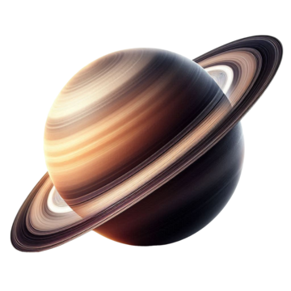

SATURNO

Saturno es el sexto planeta del Sistema Solar, situado a una distancia media de unos 1,429 millones de kilómetros del Sol.
CARACTERÍSTICAS PRINCIPALES
ANILLOS
HISTORIA Y EXPLORACIÓN
- Saturno tiene un complejo sistema de anillos compuesto principalmente de
partículas de hielo y roca. Los anillos se extienden desde aproximadamente 6,630 kilómetros hasta
120,700 kilómetros desde el ecuador de Saturno.
- Los anillos están divididos en varios anillos principales y divisiones, siendo los anillos A, B y C los más prominentes. La División de Cassini es una brecha prominente entre los anillos A y B.
- Se cree que los anillos podrían ser fragmentos de cometas, asteroides o lunas que fueron desintegrados por la gravedad de Saturno.
- Los anillos están divididos en varios anillos principales y divisiones, siendo los anillos A, B y C los más prominentes. La División de Cassini es una brecha prominente entre los anillos A y B.
- Se cree que los anillos podrían ser fragmentos de cometas, asteroides o lunas que fueron desintegrados por la gravedad de Saturno.
Marte tarda aproximadamente 687 días terrestres en completar una órbita
alrededor del Sol, lo que define su año marciano.
Un día en Marte (o sol) dura aproximadamente 24.6 horas, muy similar a un día en la Tierra.
Marte tiene estaciones como la Tierra debido a la inclinación de su eje, pero cada estación dura aproximadamente el doble de tiempo debido a su órbita más larga.
Un día en Marte (o sol) dura aproximadamente 24.6 horas, muy similar a un día en la Tierra.
Marte tiene estaciones como la Tierra debido a la inclinación de su eje, pero cada estación dura aproximadamente el doble de tiempo debido a su órbita más larga.
- Pioneer 11 (1979): La primera nave en volar cerca de Saturno, proporcionando
las primeras imágenes cercanas del planeta y sus anillos.
- Voyager 1 y 2 (1980-1981): Estas misiones proporcionaron imágenes detalladas y datos sobre Saturno, sus anillos y lunas.
- Cassini-Huygens (2004-2017): Esta misión conjunta de la NASA, la ESA y la ASI orbitaron Saturno y estudiaron el planeta, sus anillos y lunas en detalle. El módulo de aterrizaje Huygens aterrizó en Titán en 2005, proporcionando datos valiosos sobre su superficie y atmósfera.
- Voyager 1 y 2 (1980-1981): Estas misiones proporcionaron imágenes detalladas y datos sobre Saturno, sus anillos y lunas.
- Cassini-Huygens (2004-2017): Esta misión conjunta de la NASA, la ESA y la ASI orbitaron Saturno y estudiaron el planeta, sus anillos y lunas en detalle. El módulo de aterrizaje Huygens aterrizó en Titán en 2005, proporcionando datos valiosos sobre su superficie y atmósfera.